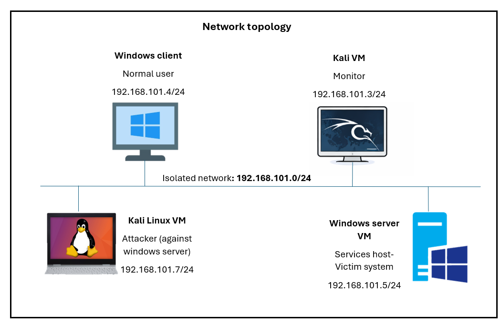
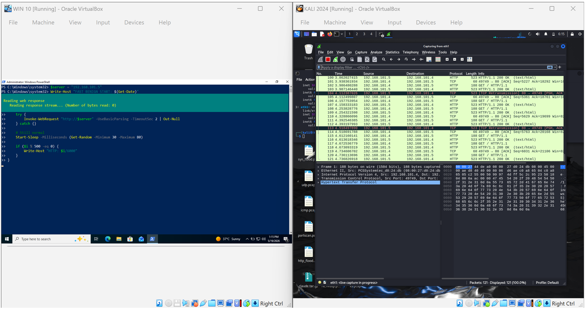
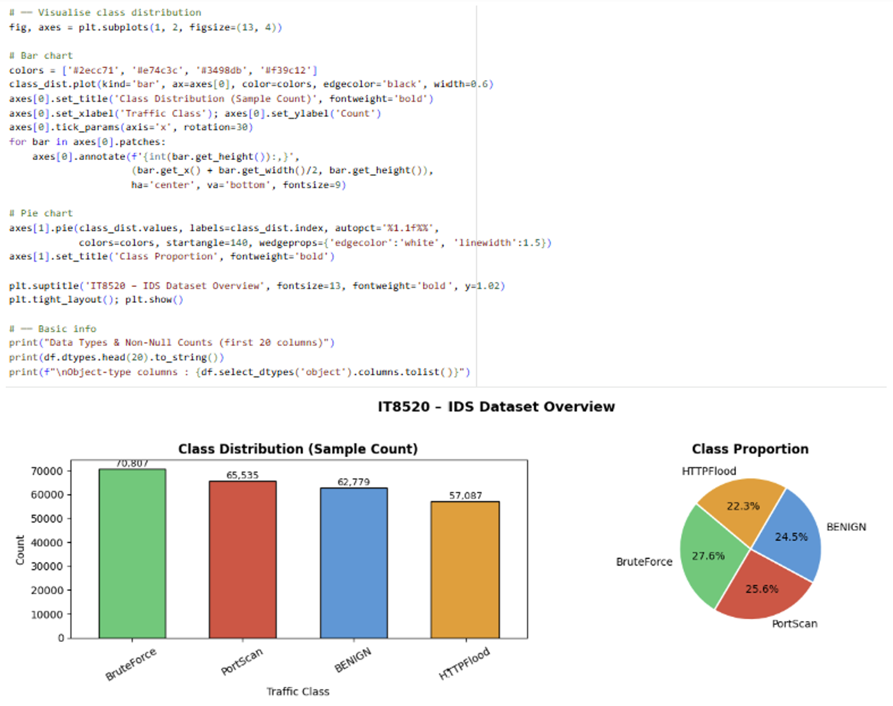
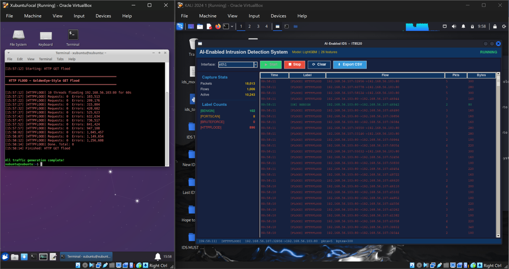

What the project set out to do
Prove that a lightweight, well-engineered ML classifier can reliably tell live malicious traffic apart from normal traffic in a simulated enterprise network — without the false-positive noise that makes most IDS tools unusable in practice.
What I actually built
I owned the full data-to-model pipeline. I built an isolated host-only virtual network to ethically generate over 15,000 malicious payloads across FTP brute force, TCP SYN scans, and HTTP floods, then converted the raw .pcap captures into flow datasets. I engineered 10 custom security-focused features (including Bwd_Dominance and SYN_Only_Flow), used Variance Inflation Factor pruning to eliminate multi-collinearity, and benchmarked an ensemble of models before selecting and tuning LightGBM as the production classifier.
Documentation on file
Includes network topology diagrams (192.168.101.0/24), correlation heatmaps, feature importance graphs, confusion matrices across 7 benchmarked models, and real-time IDS tracking readouts.

Network Topology
Data Generation and Collection
Class Distribution for Data Collection
Live IDS readout